where A is an  and B, an 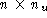 matrix.
There exists a stabilizing state feedback K
such that for every initial condition x(0) with 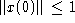 ,
the resulting control satisfies 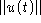 for all 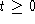 , if and only if
there exist an
and B, an 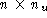 matrix.
There exists a stabilizing state feedback K
such that for every initial condition x(0) with 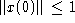 ,
the resulting control satisfies 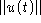 for all 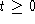 , if and only if
there exist an  matrix Q and an
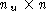 matrix Y satisfying the equality constraint
matrix Q and an
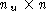 matrix Y satisfying the equality constraint
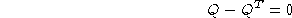
and the inequality constraints
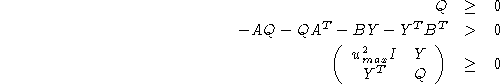
in which case one such K can be constructed as 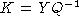 .
To solve this problem using lmisolver, we first need to construct the evaluation function.
function [LME,LMI,OBJ]=sf_sat_eval(XLIST) [Q,Y]=XLIST(:) LME=Q-Q' LMI=list(-A*Q-Q*A'-B*Y-Y'*B',[umax^2*eye(Y*Y'),Y;Y',Q],Q-eye) OBJ=[]Note that OBJ=[] indicates that the problem considered is a feasibility problem, i.e., we are only interested in finding a set of X's that satisfy LME and LMI functions.
Assuming A, B and umax already exist in the environment, we can call lmisolver, and reconstruct the solution in Scilab, as follows:
--> Q_init=zeros(A); --> Y_init=zeros(B'); --> XLIST0=list(Q_init,Y_init); --> XLIST=lmisolver(XLIST0,sf_sat_eval); --> [Q,Y]=XLIST(:)These Scilab commands can of course be encapsulated in a Scilab function, say sf_sat. Then, To solve this problem, all we need to do is type:
--> [Q,Y]=sf_sat(A,B,umax)We call sf_sat the solver function for this problem.